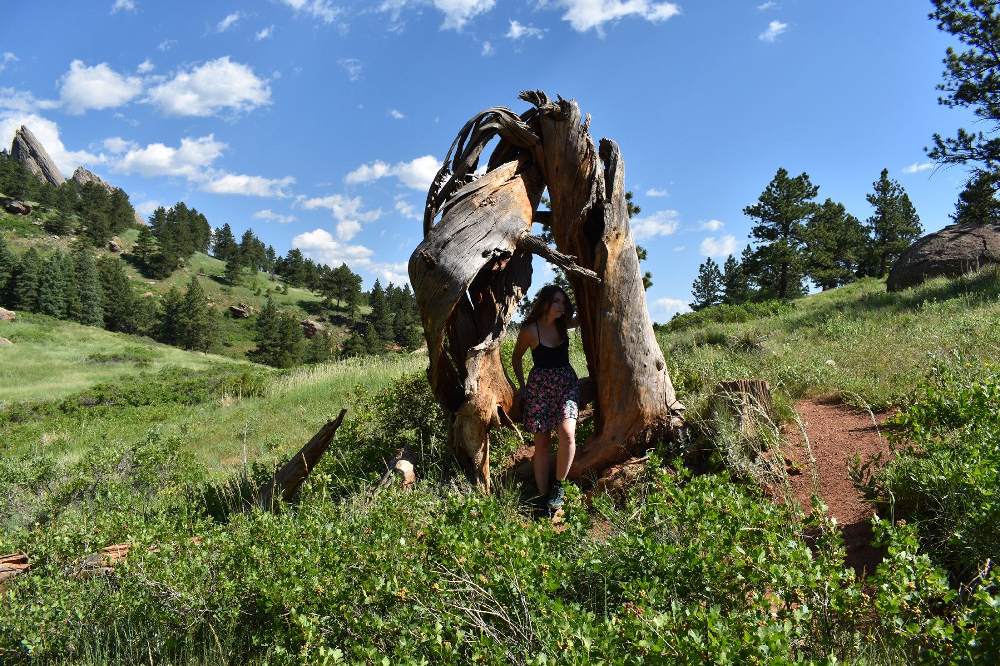

Hi! I'm Melissa.
It's nice to meet you. I'm a developer and designer based in Arvada, Colorado. In my freetime I love to paint, refinish old furniture and go outdoors.
I was born and raised in Florida with a passion for art and design. My interest in technology began in second grade when I got a gameboy color and realized that art and technology are best used when combined.
Fast forward to today, where my passion has grown into developing responsive designs that captivate target audiences.
If you would like to get in touch, I am best reached through email at: